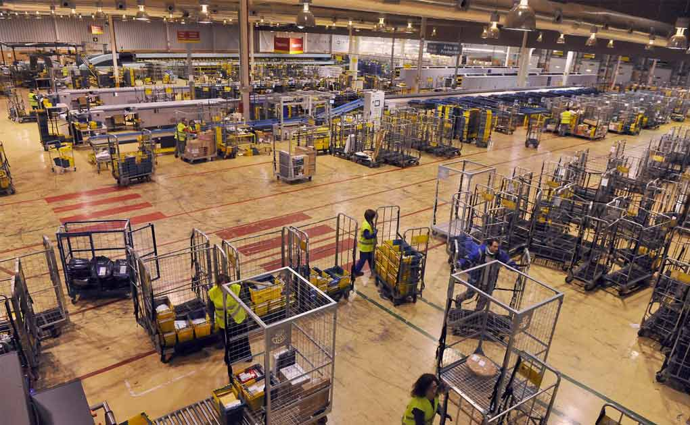

Multi Empresas
Acesso rápido e uso de dados compartilhados de todas as suas empresas em apenas um sistema.
Integre seu sistema e tenha todas as ferramentas necessárias para aplicar rastreabilidade dos ativos de seus clientes
Saiba maisO projeto consiste em entregar uma solução completa de rastreabilidade, que pode ser integrada ao seu sistema, utilizando tecnologias como RFID para receber as detecções dos ativos,porém,não se limita a esta tecnologia bastando apenas em receber as informações mínimas para registrar o histórico do determinado ativo.
Sabemos que não basta apenas conhecer onde um determinado ativo está posicionado geograficamente em tempo real. Nos dias atuais esse tipo de abordagem é o ponto de partida para uma solução com tamanha abrangência.
 Segmento - DistribuidoresCom o foco em sustentabilidade, a solução monitora a vida útil dos ativos e garante o alerta automatizado para supervisores e subordinados em saber exatamente o que deve ser descartado respeitando rigorosamente sua vida útil. No caso rastreabilidade de animais, o sistema conta com gatilhos para monitorar a atividade e serve como ferramenta de segurança, sendo possível configurar cada tipo de alerta de maneira simplificada pelo painel de controle.
Saber exatamente quais ativos monitorar, quais ativos apresentam comportamento duvidoso, o que esses ativos ociosos podem influenciar no dia-a-dia da organização: isso é possível com o T-RACK.IN.
Acesso rápido e uso de dados compartilhados de todas as suas empresas em apenas um sistema.
No sistema, você pode controlar a data de descarte dos seus ativos e para ser alertado quando a vida útil estiver chegado ao fim.
Cuide de seus ativos através de auditorias com responsáveis, ativos a serem analisadas e rastreabilidade em todo o processo de análise.
Configure seus alertas (Ligação, SMS, Webhook e E-mail) para monitorar detecções indevidas na movimentação de ativos.
Alto número de relatórios para a coleta de informações gerenciais dos ativos para supervisores.
Dados extras automaticamente disponíveis de acordo com a categoria e controle de atividades específicas. Exemplo: Bags, Bovinos e outros.
Crie rotinas de contagem programadas através do sistema e obtenha diariamente o resultado do seu inventário.
Seu time de desenvolvimento conseguirá integrar seu sistema (ERP, PCP, etc) de forma fácil através de nossa API e Webhooks.
Campos de atuação que podem utilizar e se beneficiar da tecnologia t-rack.in

A ferramenta permite o monitoramento do comportamento dos animais, assim como a ociosidade e até mesmo uma eventual perda. Contamos com equipamentos adicionais que monitoram a água que os animais se hidratam, o ganho de peso diário e até mesmo a fertilidade dos animais de acordo com seu comportamento. Todos os dados ficam disponíveis pelo painel de controle ou por nossas API's que podem ser integradas com qualquer sistema de gestão para agronegócio. Os equipamentos são desenvolvidos internamente e nossa equipe de técnicos cuidará da instalação e manutenção preventiva.
Grandes organizações precisam de controles minuciosos para evitar grandes perdas. A rastreabilidade de Big Bags e Paletes é comum no mercado sucroalcooleiro. Desenvolvemos processos para monitoramento desses ativos desde o trânsito entre filiais até mesmo quando são enviados aos clientes. Tudo é feito de forma automatizada através de portais de detecção ou de leitores manuais feitos por funcionários da usina. Os dados são sempre de fácil acesso através de nossos portais web ou também prontos para integrar através de nossas API's com grandes soluções como SAP, TOTVS, Senior, entre outros.
A distribuição de produtos pode evoluir e contar com gatilhos importantes para automação. Imagine uma carga com uma etiqueta que, por onde passar, alerta automaticamente o sistema ERP do distribuidor para assegurar que o trânsito está sendo cumprido de acordo com o prazo previsto. Ou então imagine que esses gatilhos automatizados possam disparar outras ações dentro do sistema ERP ou WMS que vão fazer novas ações e até mesmo envolver o cliente final. A criatividade não tem limite e a T-RACK-IN é o caminho para que seu ERP possa atender as demandas do IoT e novas tendências do mercado de tecnologia.
Pequenas, médias e grandes indústrias contam com processos enxutos e bem segmentados. Tendo em vista esse mercado tão bem consolidado, nossa proposta é elevar o nível dos sistemas de PCP e garantir que ações automatizadas sejam tomadas de acordo com pontos de detecção. O grande diferencial para influenciar este mercado é justamente a diminuição da dependência de pessoas para que façam o processo completo, pois a partir de determinadas detecções, o sistema poderá gerar gatilhos automatizados para fazer determinadas ações. Integre seu PCP com nossas soluções e use sua criatividade para automatizar seus processos na indústria.
A logística portuária funciona globalmente e têm determinados problemas recorrentes. Um deles é a certificação de que os contêineres estão invioláveis desde a saída até a chegada no porto destino. Desta forma, utilizamos tags específicas para o segmento em formato de gadeado para que sejam detectados. Automaticamente se houver problemas com rompimentos, o sistema será alertado e poderá gerar gatilhos e ações para informar os responsáveis. Além disso, as cargas podem ser detectadas em todo o percurso manualmente e desta forma avisam o sistema em tempo real sobre percurso, etc. Claro, a integração com sistemas de logística é importante nesses casos para gerar para o cliente o mapa e acompanhamento em tempo real.
O RFID no comércio varejista e atacadista vem crescendo muito. Devido ao custo, esse mercado demorou para ingressar e usufruir de todos os benefícios da tecnologia, porém de maneira geral o uso integrado a grandes ERP's aumentou e com isso o custo vem sendo o menor problema do segmento. O lojista pode considerar a certificação de que seus produtos e cargas sejam entregues pois com o RFID é possível evitar a manipulação de informações. Além disso, é possível também utilizar etiquetas para garantias de produtos que não serão manipuladas pelo cliente, o que certifica que aquele produto é realmente o que foi comercializado. Da mesma forma citada acima, a criatividade não têm limites e vai fazer qualquer ERP ou sistema WMS criar rastreabilidade com mais assertividade no dia-a-dia.
Dispositivo conta com Wifi, 4G/3G, RJ45, GPS. Uso recomendado para portais ou locais que necessitem de várias antenas simultaneamente.
Dispositivo conta com Wifi, 4G/3G, RJ45, GPS. Uso recomendado para portais ou locais que necessitem de apenas uma antena, por exemplo, um ponto simples de checagem.
Recomendado o uso para casos que a detecção não precisa ser direcionada. Frequências são enviadas de forma abrangente. Distância de detecção varia de 5m a 20m. Compatível com T-RACK-IN-MULTI e T-RACK-IN-MONO.
Recomendado o uso para ambientes com detecção direcionada, por exemplo: portais, rodovias, etc. A distância esperada é de 10m a 30m, dependendo do ambiente. Compatível com T-RACK-IN-MULTI e T-RACK-IN-MONO.
T-RACK.IN é uma Startup brasileira com foco em ferramentas tecnológicas para logística reversa em áreas comerciais, industriais e no agronegócio.
Com início no ano de 2019, a empresa firmou parcerias com fabricantes chineses de equipamentos para que pudesse iniciar testes e homologações de possíveis equipamentos no mercado.
No primeiro trimestre de 2020 a empresa apresentou a solução principal e também a estratégia em desenvolver equipamentos próprios para reduzir a dependência de mercados estrangeiros.